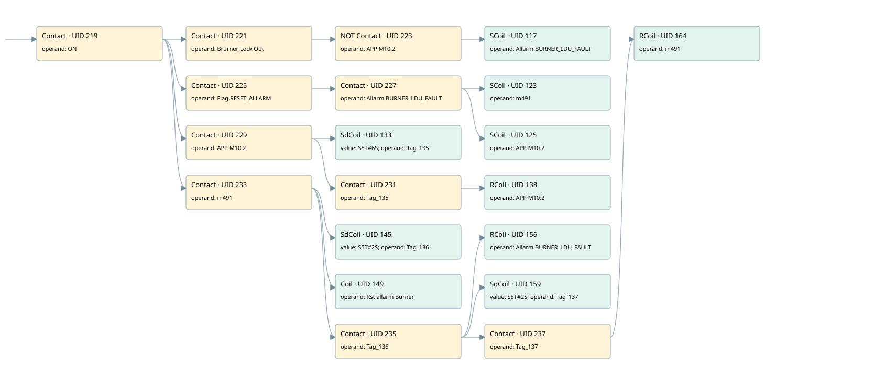

burner control box fault
burner control · 검색 색인 순서 1 · 원본 내부 NID 추정 1
백업 PLF 원본의 2677001 바이트 위치에서 복원한 XML. 검색 문서 1854의 객체 키 16102200cd10000000000000와 연결했다. 이름 해석 23/23개. 남은 RefId는 상수 또는 미해석 참조다.
연결 구조 다시 그리기
원본 Part/PCon/Wire를 이용한 연결도다. TIA 화면의 래더 배치 또는 실행 결과를 재현한 그림은 아니다. 핀 연결은 아래 표와 원본 XML을 기준으로 읽는다. 노드 위에 마우스를 두면 피연산자 이름을 볼 수 있다.

접점·코일·블록과 피연산자
| Part UID | Gate | Negated 핀 | 연결 피연산자 |
|---|---|---|---|
| 219 | Contact | operand = ON | |
| 221 | Contact | operand = Brurner Lock Out | |
| 223 | Contact | operand | operand = APP M10.2 |
| 117 | SCoil | operand = Allarm.BURNER_LDU_FAULT | |
| 225 | Contact | operand = Flag.RESET_ALLARM | |
| 227 | Contact | operand = Allarm.BURNER_LDU_FAULT | |
| 123 | SCoil | operand = m491 | |
| 125 | SCoil | operand = APP M10.2 | |
| 229 | Contact | operand = APP M10.2 | |
| 133 | SdCoil | value = S5T#6S; operand = Tag_135 | |
| 231 | Contact | operand = Tag_135 | |
| 138 | RCoil | operand = APP M10.2 | |
| 233 | Contact | operand = m491 | |
| 145 | SdCoil | value = S5T#2S; operand = Tag_136 | |
| 149 | Coil | operand = Rst allarm Burner | |
| 235 | Contact | operand = Tag_136 | |
| 156 | RCoil | operand = Allarm.BURNER_LDU_FAULT | |
| 159 | SdCoil | value = S5T#2S; operand = Tag_137 | |
| 237 | Contact | operand = Tag_137 | |
| 164 | RCoil | operand = m491 |
접점 경로를 펼친 조건식
Contact·O/A·비교기의 원본 연결을 읽기 쉽게 펼친 보조 해석이다. POWER는 전원 레일 시작을 뜻한다. 호출 블록·에지·타이머의 내부 동작과 다중 쓰기 순서는 이 표로 실행 검증하지 않았다. 미해석 핀과 RefId는 원문 연결표에서 확인한다.
| UID | 동작 | 대상 | 원본 접점 경로 | 내용 |
|---|---|---|---|---|
| 117 | SCoil | Allarm.BURNER_LDU_FAULT | ((ON AND Brurner Lock Out) AND NOT [APP M10.2]) | 조건 성립 시 Set |
| 123 | SCoil | m491 | ((ON AND Flag.RESET_ALLARM) AND Allarm.BURNER_LDU_FAULT) | 조건 성립 시 Set |
| 125 | SCoil | APP M10.2 | ((ON AND Flag.RESET_ALLARM) AND Allarm.BURNER_LDU_FAULT) | 조건 성립 시 Set |
| 133 | SdCoil | Tag_135 | (ON AND APP M10.2) | 시간 동작 SdCoil; 타이머 의미 추가 확인 / 시간 인자 S5T#6S |
| 138 | RCoil | APP M10.2 | ((ON AND APP M10.2) AND Tag_135) | 조건 성립 시 Reset |
| 145 | SdCoil | Tag_136 | (ON AND m491) | 시간 동작 SdCoil; 타이머 의미 추가 확인 / 시간 인자 S5T#2S |
| 149 | Coil | Rst allarm Burner | (ON AND m491) | 조건에 따른 Coil 기록 |
| 156 | RCoil | Allarm.BURNER_LDU_FAULT | ((ON AND m491) AND Tag_136) | 조건 성립 시 Reset |
| 159 | SdCoil | Tag_137 | ((ON AND m491) AND Tag_136) | 시간 동작 SdCoil; 타이머 의미 추가 확인 / 시간 인자 S5T#2S |
| 164 | RCoil | m491 | (((ON AND m491) AND Tag_136) AND Tag_137) | 조건 성립 시 Reset |
원본 배선 연결
| Wire UID | 동일 Wire 연결 끝점 |
|---|---|
| 239 | Powerrail {} ↔ Part 219.in |
| 188 | ORef 165 (ON) ↔ Part 219.operand |
| 220 | Part 219.out ↔ Part 221.in ↔ Part 225.in ↔ Part 229.in ↔ Part 233.in |
| 189 | ORef 166 (Brurner Lock Out) ↔ Part 221.operand |
| 222 | Part 221.out ↔ Part 223.in |
| 190 | ORef 167 (APP M10.2) ↔ Part 223.operand |
| 224 | Part 223.out ↔ Part 117.in |
| 192 | ORef 168 (Allarm.BURNER_LDU_FAULT) ↔ Part 117.operand |
| 193 | ORef 169 (Flag.RESET_ALLARM) ↔ Part 225.operand |
| 226 | Part 225.out ↔ Part 227.in |
| 194 | ORef 170 (Allarm.BURNER_LDU_FAULT) ↔ Part 227.operand |
| 228 | Part 227.out ↔ Part 123.in ↔ Part 125.in |
| 195 | ORef 171 (m491) ↔ Part 123.operand |
| 196 | ORef 172 (APP M10.2) ↔ Part 125.operand |
| 198 | ORef 173 (APP M10.2) ↔ Part 229.operand |
| 230 | Part 229.out ↔ Part 133.in ↔ Part 231.in |
| 199 | ORef 174 (S5T#6S) ↔ Part 133.value |
| 200 | ORef 175 (Tag_135) ↔ Part 133.operand |
| 201 | ORef 176 (Tag_135) ↔ Part 231.operand |
| 232 | Part 231.out ↔ Part 138.in |
| 203 | ORef 177 (APP M10.2) ↔ Part 138.operand |
| 205 | ORef 178 (m491) ↔ Part 233.operand |
| 234 | Part 233.out ↔ Part 145.in ↔ Part 149.in ↔ Part 235.in |
| 206 | ORef 179 (S5T#2S) ↔ Part 145.value |
| 207 | ORef 180 (Tag_136) ↔ Part 145.operand |
| 208 | ORef 181 (Rst allarm Burner) ↔ Part 149.operand |
| 209 | ORef 182 (Tag_136) ↔ Part 235.operand |
| 236 | Part 235.out ↔ Part 156.in ↔ Part 159.in ↔ Part 237.in |
| 210 | ORef 183 (Allarm.BURNER_LDU_FAULT) ↔ Part 156.operand |
| 211 | ORef 184 (S5T#2S) ↔ Part 159.value |
| 212 | ORef 185 (Tag_137) ↔ Part 159.operand |
| 213 | ORef 186 (Tag_137) ↔ Part 237.operand |
| 238 | Part 237.out ↔ Part 164.in |
| 215 | ORef 187 (m491) ↔ Part 164.operand |
식별자 해석 근거 23개
| ORef UID | RefId | 이름 | IdentXmlPart 파일 | 해석 방법 |
|---|---|---|---|---|
| 165 | 1 | ON | 0582-IdentXmlPart.xml | UID/RID + search-text + NID agreement |
| 166 | 3 | Brurner Lock Out | 0582-IdentXmlPart.xml | UID/RID + search-text + NID agreement |
| 167 | 4 | APP M10.2 | 0582-IdentXmlPart.xml | UID/RID + search-text + NID agreement |
| 168 | 6 | Allarm.BURNER_LDU_FAULT | 0585-IdentXmlPart.xml | UID/RID + search-text + NID agreement |
| 169 | 8 | Flag.RESET_ALLARM | 0585-IdentXmlPart.xml | UID/RID + search-text + NID agreement |
| 170 | 6 | Allarm.BURNER_LDU_FAULT | 0585-IdentXmlPart.xml | UID/RID + search-text + NID agreement |
| 171 | 9 | m491 | 0582-IdentXmlPart.xml | UID/RID + search-text + NID agreement |
| 172 | 4 | APP M10.2 | 0582-IdentXmlPart.xml | UID/RID + search-text + NID agreement |
| 173 | 4 | APP M10.2 | 0582-IdentXmlPart.xml | UID/RID + search-text + NID agreement |
| 175 | 13 | Tag_135 | 0582-IdentXmlPart.xml | UID/RID + search-text + NID agreement |
| 174 | 12 | S5T#6S | 0586-IdentXmlPart.xml | literal candidate: UID/RID/NID + nearby named declarations + search-text agreement |
| 176 | 13 | Tag_135 | 0582-IdentXmlPart.xml | UID/RID + search-text + NID agreement |
| 177 | 4 | APP M10.2 | 0582-IdentXmlPart.xml | UID/RID + search-text + NID agreement |
| 178 | 9 | m491 | 0582-IdentXmlPart.xml | UID/RID + search-text + NID agreement |
| 180 | 15 | Tag_136 | 0582-IdentXmlPart.xml | UID/RID + search-text + NID agreement |
| 179 | 14 | S5T#2S | 0586-IdentXmlPart.xml | literal candidate: UID/RID/NID + nearby named declarations + search-text agreement |
| 181 | 16 | Rst allarm Burner | 0582-IdentXmlPart.xml | UID/RID + search-text + NID agreement |
| 182 | 15 | Tag_136 | 0582-IdentXmlPart.xml | UID/RID + search-text + NID agreement |
| 183 | 6 | Allarm.BURNER_LDU_FAULT | 0585-IdentXmlPart.xml | UID/RID + search-text + NID agreement |
| 185 | 18 | Tag_137 | 0582-IdentXmlPart.xml | UID/RID + search-text + NID agreement |
| 184 | 14 | S5T#2S | 0586-IdentXmlPart.xml | literal candidate: UID/RID/NID + nearby named declarations + search-text agreement |
| 186 | 18 | Tag_137 | 0582-IdentXmlPart.xml | UID/RID + search-text + NID agreement |
| 187 | 9 | m491 | 0582-IdentXmlPart.xml | UID/RID + search-text + NID agreement |
검색 코드 보조 자료
참조 명칭을 찾기 위한 자료이며 실행 순서나 AND/OR 관계는 위 연결표로 확인한다.
"on" "brurner lock out" "app m10.2" "allarm".burner_ldu_fault "flag".reset_allarm "allarm".burner_ldu_fault "m491" "app m10.2" "app m10.2" "tag_135" s5t#6s "tag_135" "app m10.2" "m491" "tag_136" s5t#2s "rst allarm burner" "tag_136" "allarm".burner_ldu_fault "tag_137" s5t#2s "tag_137" "m491"